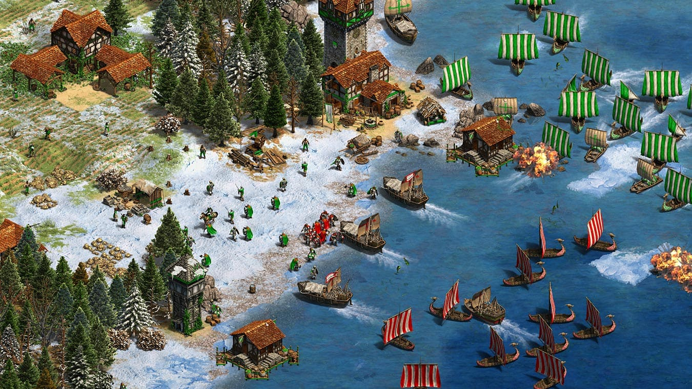
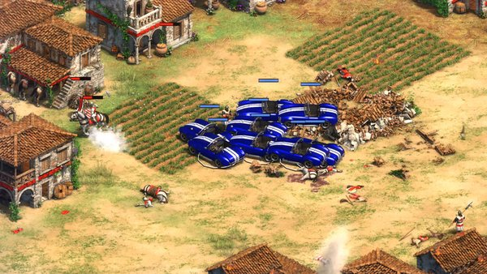

cheese steak jimmy's: Consigues 1.000 uds de comida.
robin hood: Consigues 1.000 uds de oro.
rock on: Consigues 1.000 uds de piedra.
lumberjack: Consigues 1.000 uds de madera.
ninjaconnor / ninjalui / rowshep: Utiliza cualquiera de los tres
códigos para
conseguir 100.000 de cada una de los recursos del juego.


how do you turn this on: Desbloqueas un chulísimo Shelby Cobra
que dispara.
to smithereens: Desbloqueas a un saboteador.
i love the monkey head: Desbloqueas la unidad VMDL, "Villager
Male Dave Lewis". Este truco es un homenaje a un antiguo trabajador de la compañía llamado Dave
Lewis.
woof woof: Consigues un perro volador con capa.
furious the monkey boy: Se crean monos que pueden destruir
edificios.
i don't exist: Desbloqueas a pingüinos (sólo válido desde la
versión HD).
alpaca simulator: Desbloqueas a Alfred La Alpaca (sólo válido
desde la versión HD).
natural wonders: Permite controlar a los animales.
marco: Con este truco podremos descubrir el mapa al completo.
polo: Se quita la niebla de guerra automáticamente.
resign: Pierdes la partida automáticamente.
i r winner: Ganas la partida automáticamente.
black death: Todos los enemigos mueren, ojo, que también los
aliados.
wimpywimpywimpy: Todas las unidades se suicidan, por lo que
también pierdes la partida.
torpedo(1-8): Matas a un oponente en concreto, introduce un
número del 1 al 8, que sería el del enemigo a destruir.